2026 National 5 Biology - Paper 2 questions
Source: Scottish Qualifications Authority (SQA) / Qualifications Scotland. This is a StemInteract HTML companion, not an official HTML edition. Selectable text is supplied alongside original page images. Use the images or original PDF for equations, powers, fractions, vector notation, tables and diagrams; text extraction cannot fully preserve mathematical layout.
Jump to a question
PDF page 1
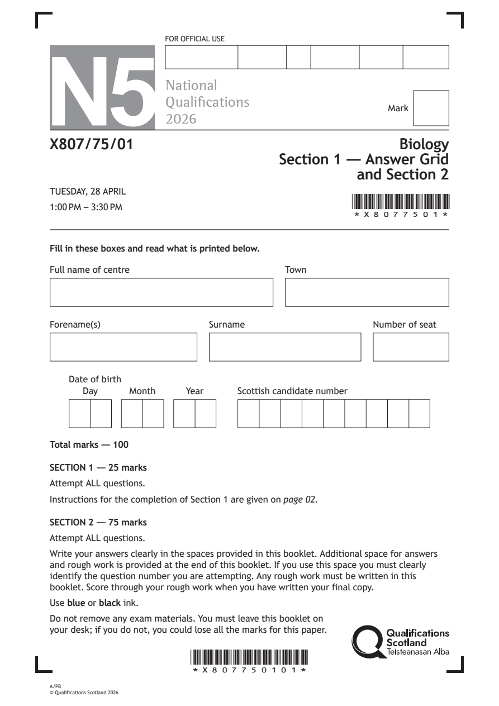
Selectable page text
FOR OFFICIAL USE
N5
National
Qualications
Mark
2026
X807/75/01 Biology
Section 1 — Answer Grid
and Section 2
TUESDAY, 28 APRIL
1:00 PM – 3:30 PM
*X8077501*
Fill in these boxes and read what is printed below.
Full name of centre Town
Forename(s) Surname Number of seat
Date of birth
Day Month Year Scottish candidate number
Total marks — 100
SECTION 1 — 25 marks
Attempt ALL questions.
Instructions for the completion of Section 1 are given on page 02.
SECTION 2 — 75 marks
Attempt ALL questions.
Write your answers clearly in the spaces provided in this booklet. Additional space for answers
and rough work is provided at the end of this booklet. If you use this space you must clearly
identify the question number you are attempting. Any rough work must be written in this
booklet. Score through your rough work when you have written your final copy.
Use blue or black ink.
Do not remove any exam materials. You must leave this booklet on
your desk; if you do not, you could lose all the marks for this paper.
*X807750101*
A/PB
© Qualifications Scotland 2026PDF page 2
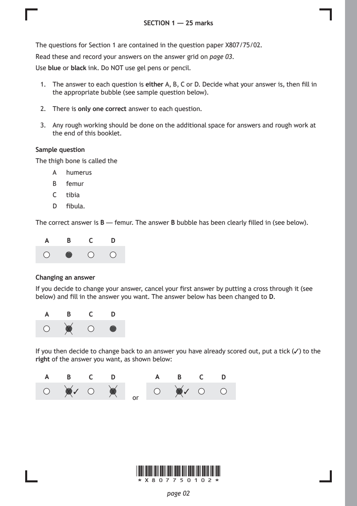
Selectable page text
SECTION 1 — 25 marks
The questions for Section 1 are contained in the question paper X807/75/02.
Read these and record your answers on the answer grid on page 03.
Use blue or black ink. Do NOT use gel pens or pencil.
1. The answer to each question is either A, B, C or D. Decide what your answer is, then fill in
the appropriate bubble (see sample question below).
2. There is only one correct answer to each question.
3. Any rough working should be done on the additional space for answers and rough work at
the end of this booklet.
Sample question
The thigh bone is called the
A humerus
B femur
C tibia
D fibula.
The correct answer is B — femur. The answer B bubble has been clearly filled in (see below).
A B C D
Changing an answer
If you decide to change your answer, cancel your first answer by putting a cross through it (see
below) and fill in the answer you want. The answer below has been changed to D.
A B C D
If you then decide to change back to an answer you have already scored out, put a tick (✓) to the
right of the answer you want, as shown below:
A B C D A B C D
or
*X807750102*
page 02PDF page 3
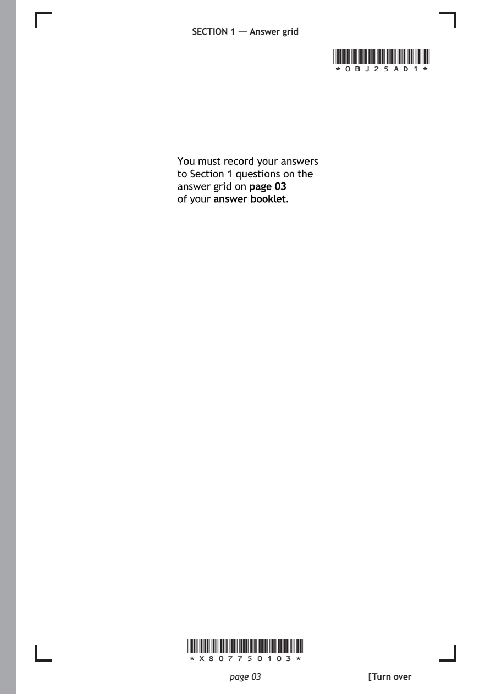
Selectable page text
SECTION 1 — Answer grid
*OBJ25AD1*
A B C D
1
2
3
4
5
6
7
8
9
10
11
12
13
14
15
16
17
18
19
20
21
22
23
24
25
*X807750103*
page 03 [Turn overPDF page 4
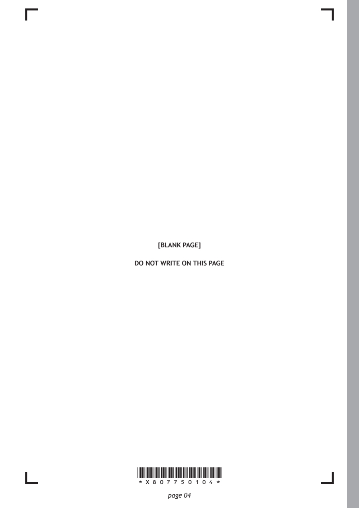
Selectable page text
[BLANK PAGE]
DO NOT WRITE ON THIS PAGE
*X807750104*
page 04PDF page 5
Paper 2, Question 1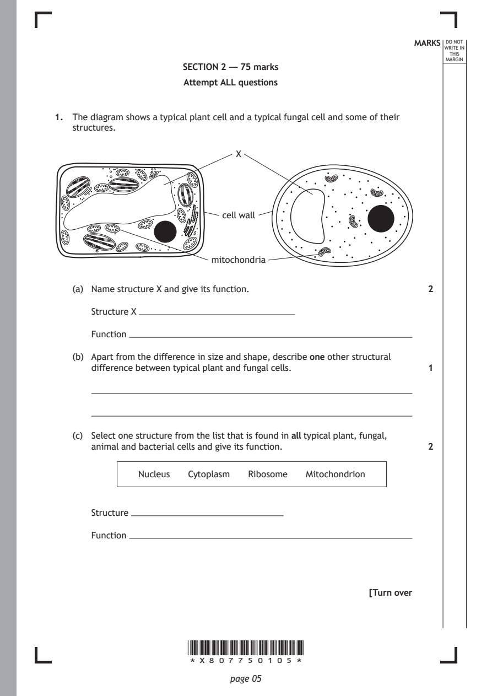
Selectable page text
MARKS _{W}^{D}_{R}^{O}_{I} _{T}^{N}OT
E IN
THIS
MARGIN
SECTION 2 — 75 marks
Attempt ALL questions
1. The diagram shows a typical plant cell and a typical fungal cell and some of their
structures.
X
cell wall
mitochondria
(a) Name structure X and give its function. 2
Structure X
Function
(b) Apart from the difference in size and shape, describe one other structural
difference between typical plant and fungal cells. 1
(c) Select one structure from the list that is found in all typical plant, fungal,
animal and bacterial cells and give its function. 2
Nucleus Cytoplasm Ribosome Mitochondrion
Structure
Function
[Turn over
*X807750105*
page 05PDF page 6
Paper 2, Question 2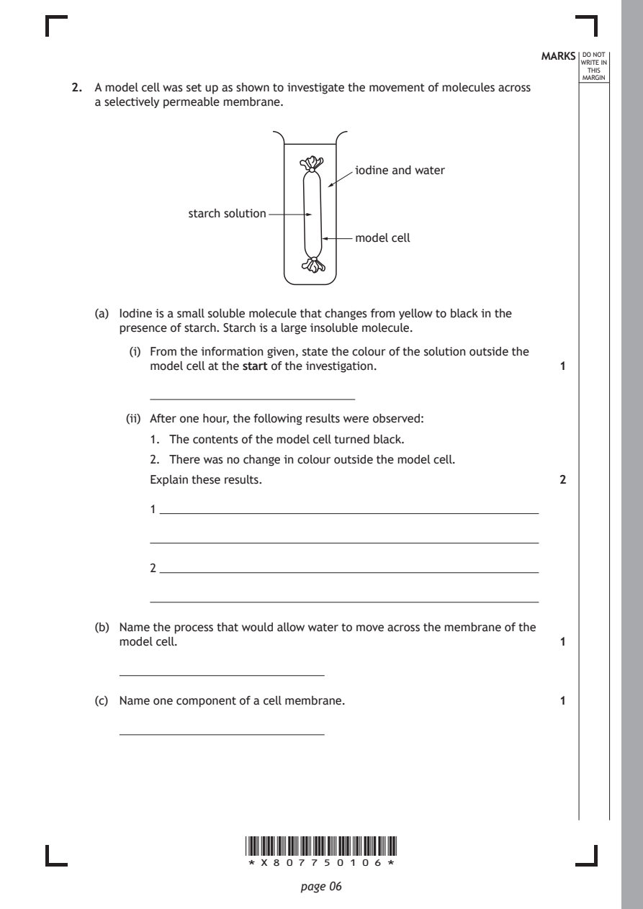
Selectable page text
MARKS _{W}^{D}_{R}^{O}_{I} _{T}^{N}OT
E IN
THIS
MARGIN
2. A model cell was set up as shown to investigate the movement of molecules across
a selectively permeable membrane.
iodine and water
starch solution
model cell
(a) Iodine is a small soluble molecule that changes from yellow to black in the
presence of starch. Starch is a large insoluble molecule.
(i) From the information given, state the colour of the solution outside the
model cell at the start of the investigation. 1
(ii) After one hour, the following results were observed:
1. The contents of the model cell turned black.
2. There was no change in colour outside the model cell.
Explain these results. 2
1
2
(b) Name the process that would allow water to move across the membrane of the
model cell. 1
(c) Name one component of a cell membrane. 1
*X807750106*
page 06PDF page 7
Paper 2, Question 3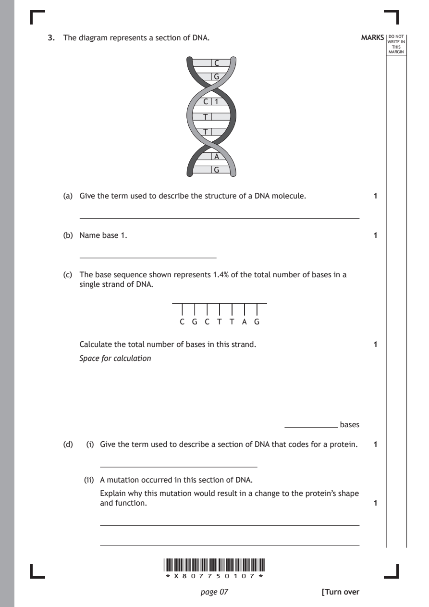
Selectable page text
3. The diagram represents a section of DNA. MARKS _{W}^{D}_{R}^{O}_{I} _{T}^{N}OT
E IN
THIS
MARGIN
C
G
C 1
T
T
A
G
(a) Give the term used to describe the structure of a DNA molecule. 1
(b) Name base 1. 1
(c) The base sequence shown represents 1.4% of the total number of bases in a
single strand of DNA.
C G C T T A G
Calculate the total number of bases in this strand. 1
Space for calculation
������������������������ bases
(d) (i) Give the term used to describe a section of DNA that codes for a protein. 1
(ii) A mutation occurred in this section of DNA.
Explain why this mutation would result in a change to the protein’s shape
and function. 1
*X807750107*
page 07 [Turn overPDF page 8
Paper 2, Question 4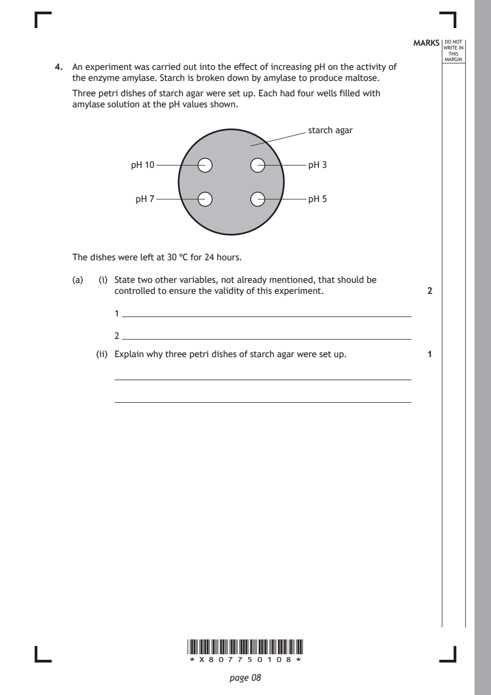
Selectable page text
MARKS _{W}^{D}_{R}^{O}_{I} _{T}^{N}OT
E IN
THIS
MARGIN
4. An experiment was carried out into the effect of increasing pH on the activity of
the enzyme amylase. Starch is broken down by amylase to produce maltose.
Three petri dishes of starch agar were set up. Each had four wells filled with
amylase solution at the pH values shown.
starch agar
pH 10 pH 3
pH 7 pH 5
The dishes were left at 30 °C for 24 hours.
(a) (i) State two other variables, not already mentioned, that should be
controlled to ensure the validity of this experiment. 2
1
2
(ii) Explain why three petri dishes of starch agar were set up. 1
*X807750108*
page 08PDF page 9
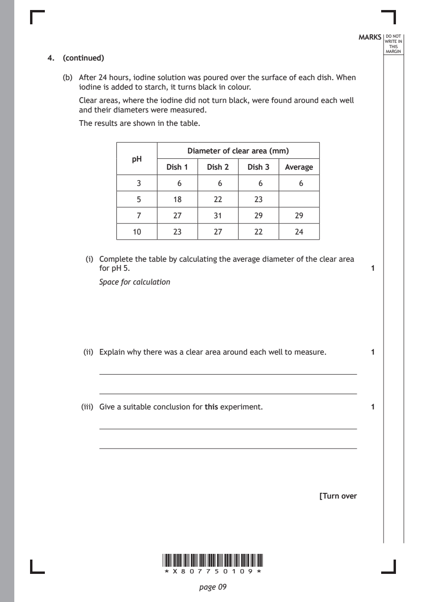
Selectable page text
MARKS _{W}^{D}_{R}^{O}_{I} _{T}^{N}OT
E IN
THIS
MARGIN
4. (continued)
(b) After 24 hours, iodine solution was poured over the surface of each dish. When
iodine is added to starch, it turns black in colour.
Clear areas, where the iodine did not turn black, were found around each well
and their diameters were measured.
The results are shown in the table.
Diameter of clear area (mm)
pH
Dish 1 Dish 2 Dish 3 Average
3 6 6 6 6
5 18 22 23
7 27 31 29 29
10 23 27 22 24
(i) Complete the table by calculating the average diameter of the clear area
for pH 5. 1
Space for calculation
(ii) Explain why there was a clear area around each well to measure. 1
(iii) Give a suitable conclusion for this experiment. 1
[Turn over
*X807750109*
page 09PDF page 10
Paper 2, Question 5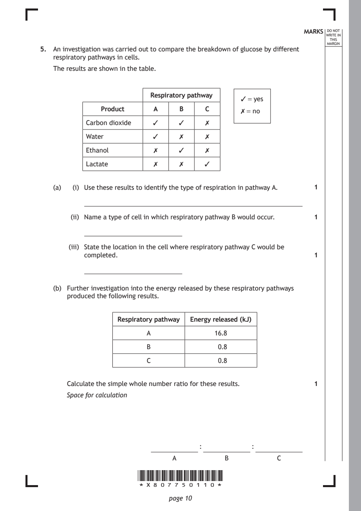
Selectable page text
MARKS _{W}^{D}_{R}^{O}_{I} _{T}^{N}OT
E IN
THIS
MARGIN
5. An investigation was carried out to compare the breakdown of glucose by different
respiratory pathways in cells.
The results are shown in the table.
Respiratory pathway
✓ = yes
Product A B C ✗ = no
Carbon dioxide ✓ ✓ ✗
Water ✓ ✗ ✗
Ethanol ✗ ✓ ✗
Lactate ✗ ✗ ✓
(a) (i) Use these results to identify the type of respiration in pathway A. 1
(ii) Name a type of cell in which respiratory pathway B would occur. 1
(iii) State the location in the cell where respiratory pathway C would be
completed. 1
(b) Further investigation into the energy released by these respiratory pathways
produced the following results.
Respiratory pathway Energy released (kJ)
A 16.8
B 0.8
C 0.8
Calculate the simple whole number ratio for these results. 1
Space for calculation
: :
A B C
*X807750110*
page 10PDF page 11
Paper 2, Question 6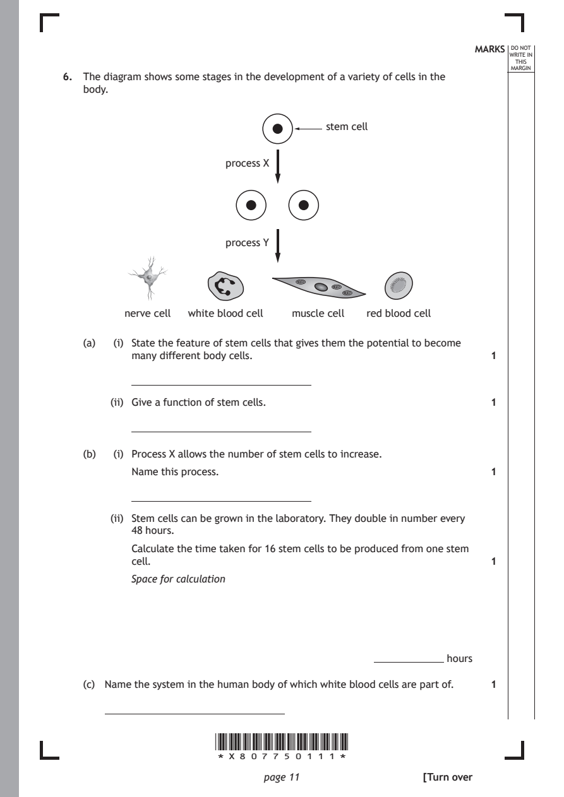
Selectable page text
MARKS _{W}^{D}_{R}^{O}_{I} _{T}^{N}OT
E IN
THIS
MARGIN
6. The diagram shows some stages in the development of a variety of cells in the
body.
stem cell
process X
process Y
nerve cell white blood cell muscle cell red blood cell
(a) (i) State the feature of stem cells that gives them the potential to become
many different body cells. 1
(ii) Give a function of stem cells. 1
(b) (i) Process X allows the number of stem cells to increase.
Name this process. 1
(ii) Stem cells can be grown in the laboratory. They double in number every
48 hours.
Calculate the time taken for 16 stem cells to be produced from one stem
cell. 1
Space for calculation
������������������������ hours
(c) Name the system in the human body of which white blood cells are part of. 1
*X807750111*
page 11 [Turn overPDF page 12
Paper 2, Question 7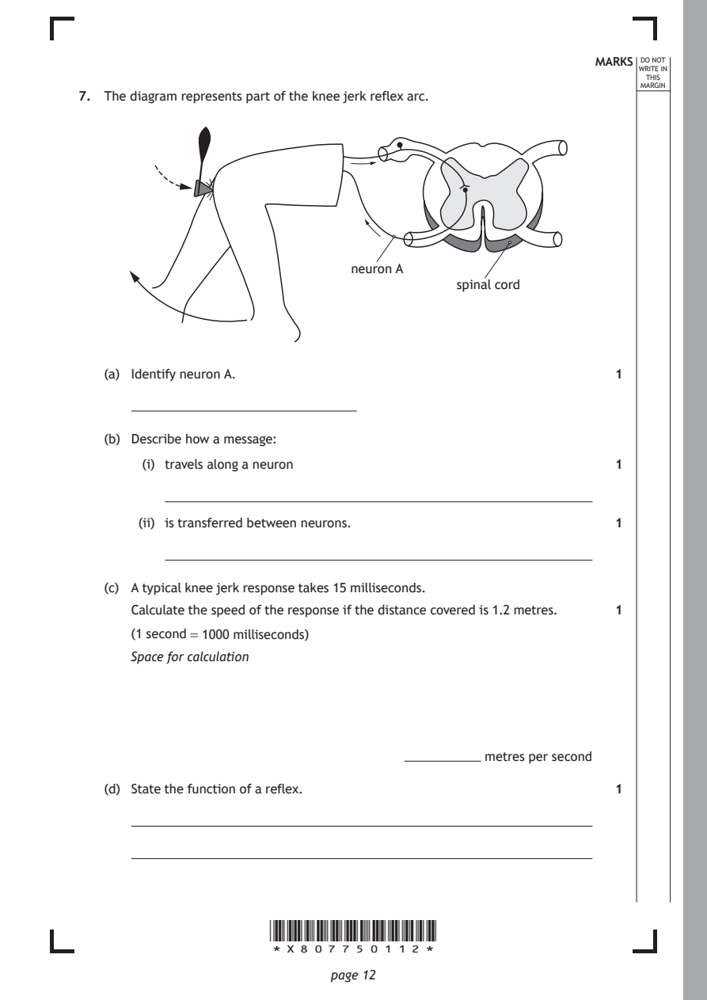
Selectable page text
MARKS _{W}^{D}_{R}^{O}_{I} _{T}^{N}OT
E IN
THIS
MARGIN
7. The diagram represents part of the knee jerk reflex arc.
neuron A
spinal cord
(a) Identify neuron A. 1
(b) Describe how a message:
(i) travels along a neuron 1
(ii) is transferred between neurons. 1
(c) A typical knee jerk response takes 15 milliseconds.
Calculate the speed of the response if the distance covered is 1.2 metres. 1
(1 second = 1000 milliseconds)
Space for calculation
��������������������� metres per second
(d) State the function of a reflex. 1
*X807750112*
page 12PDF page 13
Paper 2, Question 8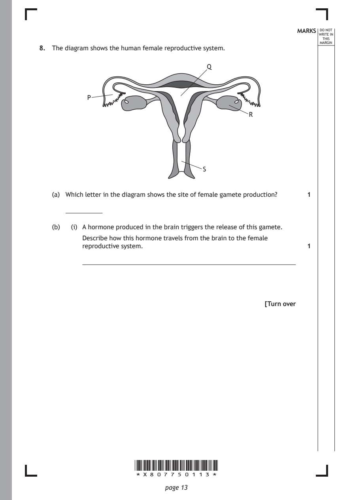
Selectable page text
MARKS _{W}^{D}_{R}^{O}_{I} _{T}^{N}OT
E IN
THIS
MARGIN
8. The diagram shows the human female reproductive system.
Q
P
R
S
(a) Which letter in the diagram shows the site of female gamete production? 1
(b) (i) A hormone produced in the brain triggers the release of this gamete.
Describe how this hormone travels from the brain to the female
reproductive system. 1
[Turn over
*X807750113*
page 13PDF page 14
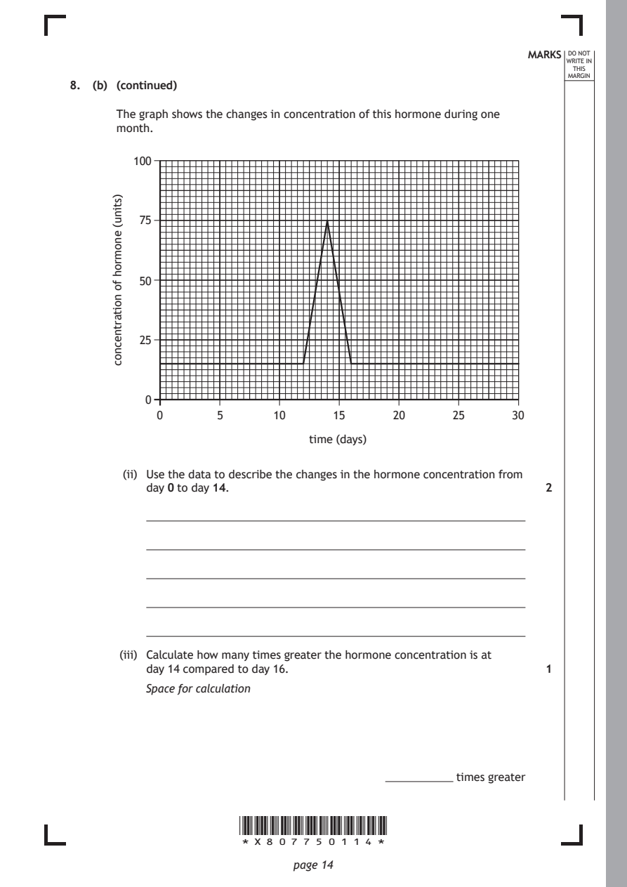
Selectable page text
MARKS _{W}^{D}_{R}^{O}_{I} _{T}^{N}OT
E IN
THIS
MARGIN
8. (b) (continued)
The graph shows the changes in concentration of this hormone during one
month.
time (days)
*X807750114*
page 14
)stinu(
enomroh
fo
noitartnecnoc
100
75
50
25
0
0 5 10 15 20 25 30
(ii) Use the data to describe the changes in the hormone concentration from
day 0 to day 14. 2
(iii) Calculate how many times greater the hormone concentration is at
day 14 compared to day 16. 1
Space for calculation
��������������������� times greaterPDF page 15
Paper 2, Question 9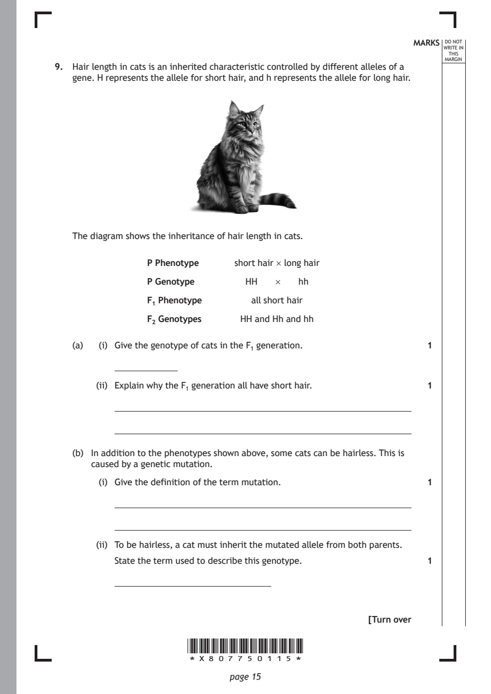
Selectable page text
MARKS _{W}^{D}_{R}^{O}_{I} _{T}^{N}OT
E IN
THIS
MARGIN
9. Hair length in cats is an inherited characteristic controlled by different alleles of a
gene. H represents the allele for short hair, and h represents the allele for long hair.
The diagram shows the inheritance of hair length in cats.
P Phenotype short hair × long hair
P Genotype HH × hh
F₁ Phenotype all short hair
F₂ Genotypes HH and Hh and hh
(a) (i) Give the genotype of cats in the F₁ generation. 1
(ii) Explain why the F₁ generation all have short hair. 1
(b) In addition to the phenotypes shown above, some cats can be hairless. This is
caused by a genetic mutation.
(i) Give the definition of the term mutation. 1
(ii) To be hairless, a cat must inherit the mutated allele from both parents.
State the term used to describe this genotype. 1
[Turn over
*X807750115*
page 15PDF page 16
Paper 2, Question 10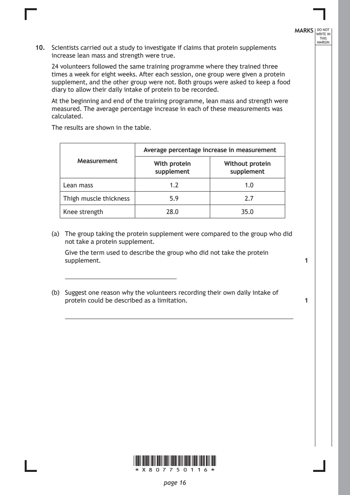
Selectable page text
MARKS _{W}^{D}_{R}^{O}_{I} _{T}^{N}OT
E IN
THIS
MARGIN
10. Scientists carried out a study to investigate if claims that protein supplements
increase lean mass and strength were true.
24 volunteers followed the same training programme where they trained three
times a week for eight weeks. After each session, one group were given a protein
supplement, and the other group were not. Both groups were asked to keep a food
diary to allow their daily intake of protein to be recorded.
At the beginning and end of the training programme, lean mass and strength were
measured. The average percentage increase in each of these measurements was
calculated.
The results are shown in the table.
Average percentage increase in measurement
Measurement
With protein Without protein
supplement supplement
Lean mass 1.2 1.0
Thigh muscle thickness 5.9 2.7
Knee strength 28.0 35.0
(a) The group taking the protein supplement were compared to the group who did
not take a protein supplement.
Give the term used to describe the group who did not take the protein
supplement. 1
(b) Suggest one reason why the volunteers recording their own daily intake of
protein could be described as a limitation. 1
*X807750116*
page 16PDF page 17
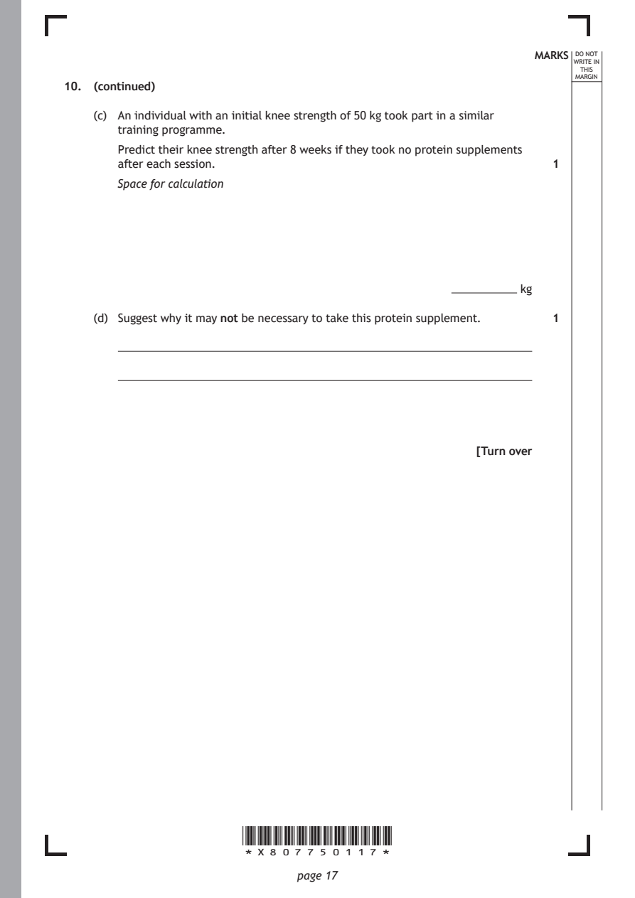
Selectable page text
MARKS _{W}^{D}_{R}^{O}_{I} _{T}^{N}OT
E IN
THIS
MARGIN
10. (continued)
(c) An individual with an initial knee strength of 50 kg took part in a similar
training programme.
Predict their knee strength after 8 weeks if they took no protein supplements
after each session. 1
Space for calculation
�������������������� kg
(d) Suggest why it may not be necessary to take this protein supplement. 1
[Turn over
*X807750117*
page 17PDF page 18
Paper 2, Question 11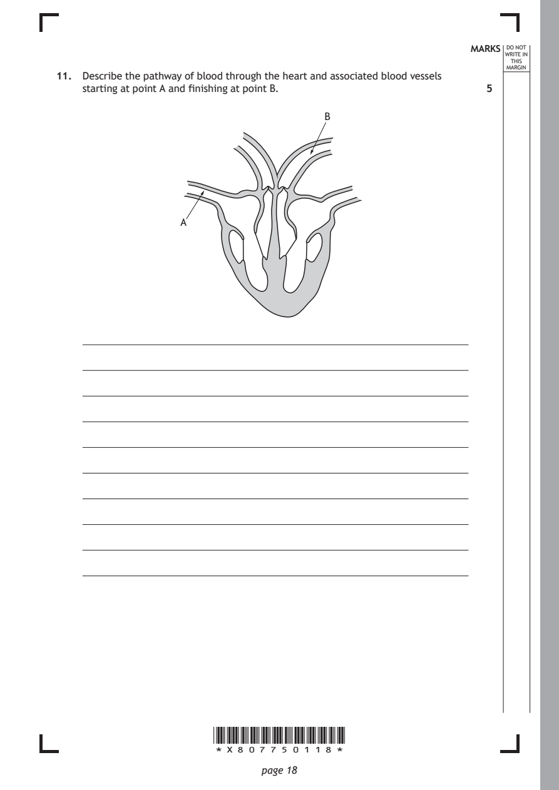
Selectable page text
MARKS _{W}^{D}_{R}^{O}_{I} _{T}^{N}OT
E IN
THIS
MARGIN
11. Describe the pathway of blood through the heart and associated blood vessels
starting at point A and finishing at point B. 5
B
A
*X807750118*
page 18PDF page 19
Paper 2, Question 12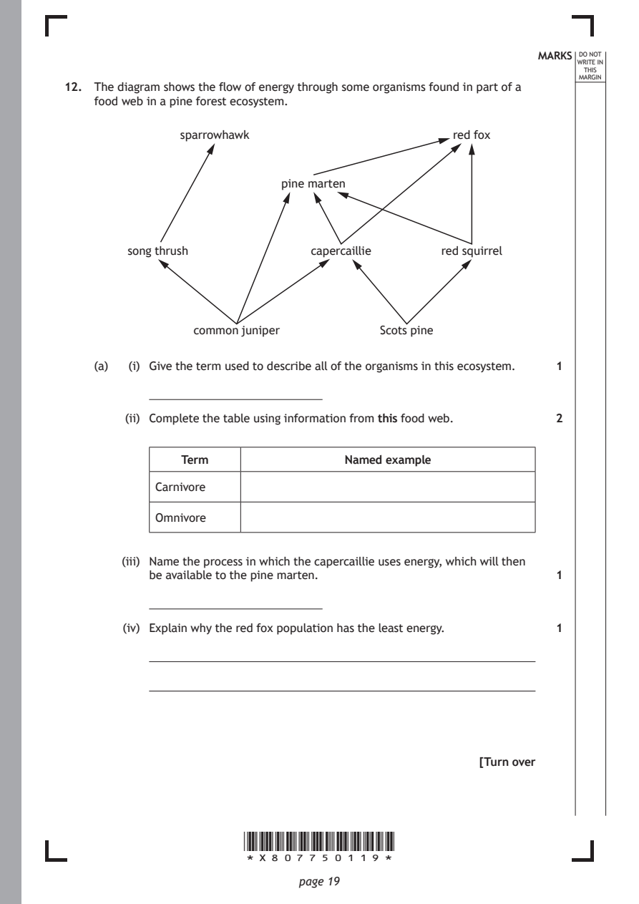
Selectable page text
MARKS _{W}^{D}_{R}^{O}_{I} _{T}^{N}OT
E IN
THIS
MARGIN
12. The diagram shows the flow of energy through some organisms found in part of a
food web in a pine forest ecosystem.
sparrowhawk red fox
pine marten
song thrush capercaillie red squirrel
common juniper Scots pine
(a) (i) Give the term used to describe all of the organisms in this ecosystem. 1
(ii) Complete the table using information from this food web. 2
Term Named example
Carnivore
Omnivore
(iii) Name the process in which the capercaillie uses energy, which will then
be available to the pine marten. 1
(iv) Explain why the red fox population has the least energy. 1
[Turn over
*X807750119*
page 19PDF page 20
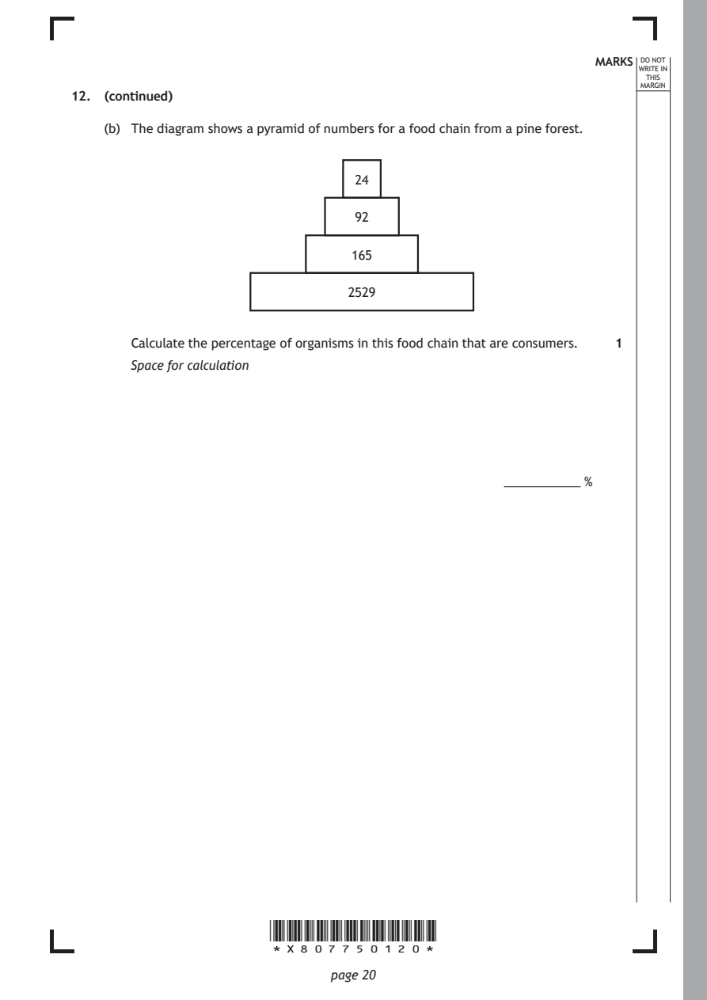
Selectable page text
MARKS _{W}^{D}_{R}^{O}_{I} _{T}^{N}OT
E IN
THIS
MARGIN
12. (continued)
(b) The diagram shows a pyramid of numbers for a food chain from a pine forest.
24
92
165
2529
Calculate the percentage of organisms in this food chain that are consumers. 1
Space for calculation
��������������������� %
*X807750120*
page 20PDF page 21
Paper 2, Question 13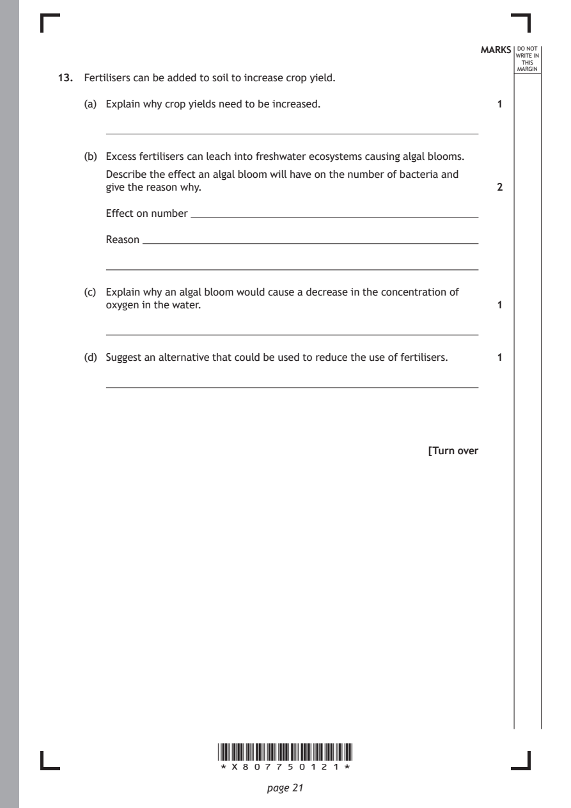
Selectable page text
MARKS _{W}^{D}_{R}^{O}_{I} _{T}^{N}OT
E IN
THIS
MARGIN
13. Fertilisers can be added to soil to increase crop yield.
(a) Explain why crop yields need to be increased. 1
(b) Excess fertilisers can leach into freshwater ecosystems causing algal blooms.
Describe the effect an algal bloom will have on the number of bacteria and
give the reason why. 2
Effect on number
Reason
(c) Explain why an algal bloom would cause a decrease in the concentration of
oxygen in the water. 1
(d) Suggest an alternative that could be used to reduce the use of fertilisers. 1
[Turn over
*X807750121*
page 21PDF page 22
Paper 2, Question 14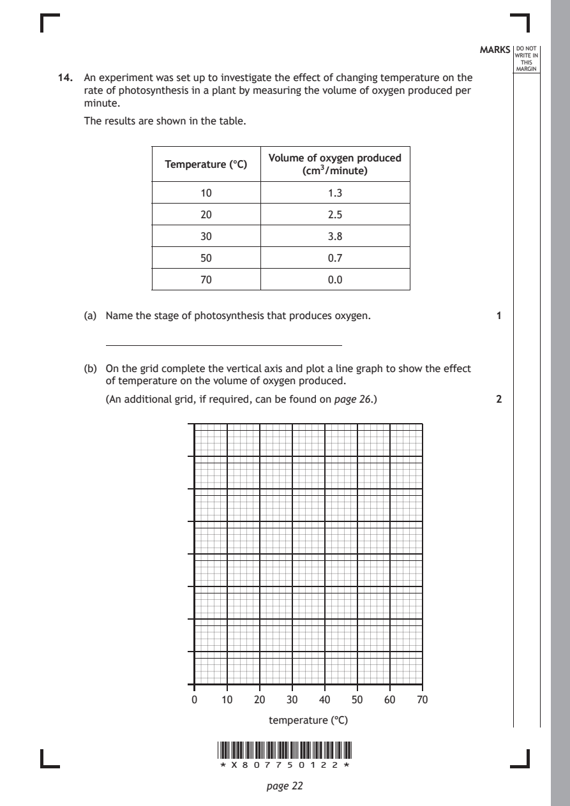
Selectable page text
MARKS _{W}^{D}_{R}^{O}_{I} _{T}^{N}OT
E IN
THIS
MARGIN
14. An experiment was set up to investigate the effect of changing temperature on the
rate of photosynthesis in a plant by measuring the volume of oxygen produced per
minute.
The results are shown in the table.
Volume of oxygen produced
Temperature (°C)
(cm³/minute)
10 1.3
20 2.5
30 3.8
50 0.7
70 0.0
(a) Name the stage of photosynthesis that produces oxygen. 1
(b) On the grid complete the vertical axis and plot a line graph to show the effect
of temperature on the volume of oxygen produced.
(An additional grid, if required, can be found on page 26.) 2
0 10 20 30 40 50 60 70
temperature (°C)
*X807750122*
page 22PDF page 23
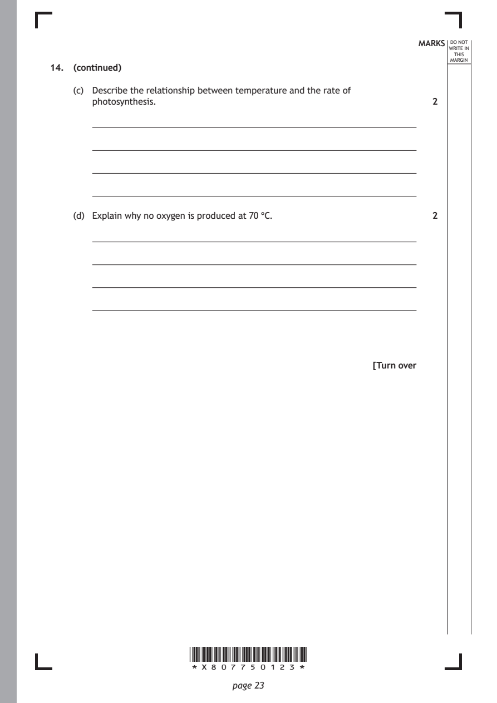
Selectable page text
MARKS _{W}^{D}_{R}^{O}_{I} _{T}^{N}OT
E IN
THIS
MARGIN
14. (continued)
(c) Describe the relationship between temperature and the rate of
photosynthesis. 2
(d) Explain why no oxygen is produced at 70 °C. 2
[Turn over
*X807750123*
page 23PDF page 24
Paper 2, Question 15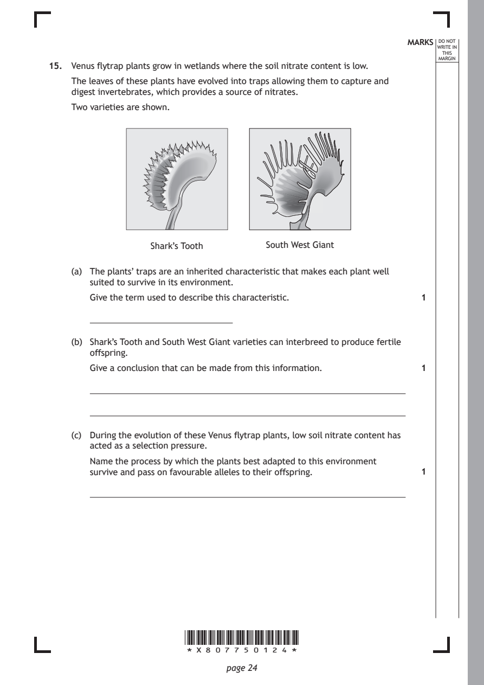
Selectable page text
MARKS _{W}^{D}_{R}^{O}_{I} _{T}^{N}OT
E IN
THIS
MARGIN
15. Venus flytrap plants grow in wetlands where the soil nitrate content is low.
The leaves of these plants have evolved into traps allowing them to capture and
digest invertebrates, which provides a source of nitrates.
Two varieties are shown.
Shark’s Tooth South West Giant
(a) The plants’ traps are an inherited characteristic that makes each plant well
suited to survive in its environment.
Give the term used to describe this characteristic. 1
(b) Shark’s Tooth and South West Giant varieties can interbreed to produce fertile
offspring.
Give a conclusion that can be made from this information. 1
(c) During the evolution of these Venus flytrap plants, low soil nitrate content has
acted as a selection pressure.
Name the process by which the plants best adapted to this environment
survive and pass on favourable alleles to their offspring. 1
*X807750124*
page 24PDF page 25
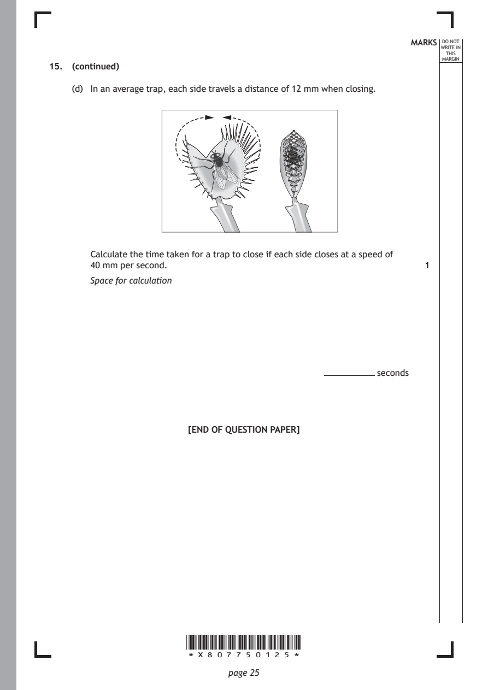
Selectable page text
MARKS _{W}^{D}_{R}^{O}_{I} _{T}^{N}OT
E IN
THIS
MARGIN
15. (continued)
(d) In an average trap, each side travels a distance of 12 mm when closing.
Calculate the time taken for a trap to close if each side closes at a speed of
40 mm per second. 1
Space for calculation
�������������������� seconds
[END OF QUESTION PAPER]
*X807750125*
page 25PDF page 26
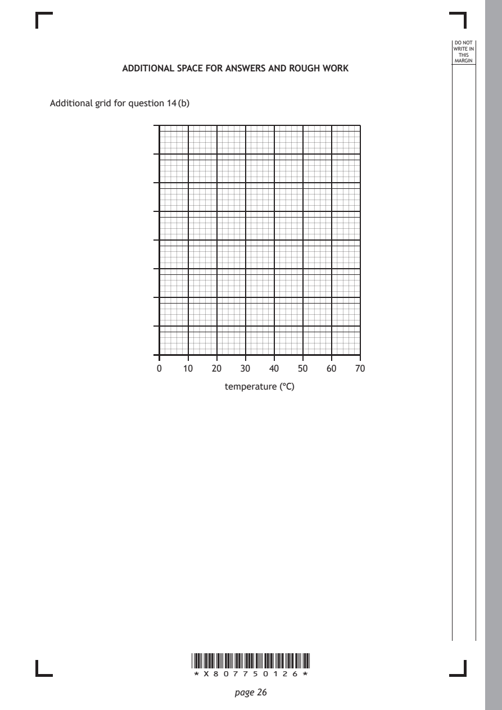
Selectable page text
DO NOT
WRITE IN
THIS
MARGIN
ADDITIONAL SPACE FOR ANSWERS AND ROUGH WORK
Additional grid for question 14 (b)
0 10 20 30 40 50 60 70
temperature (°C)
*X807750126*
page 26PDF page 27
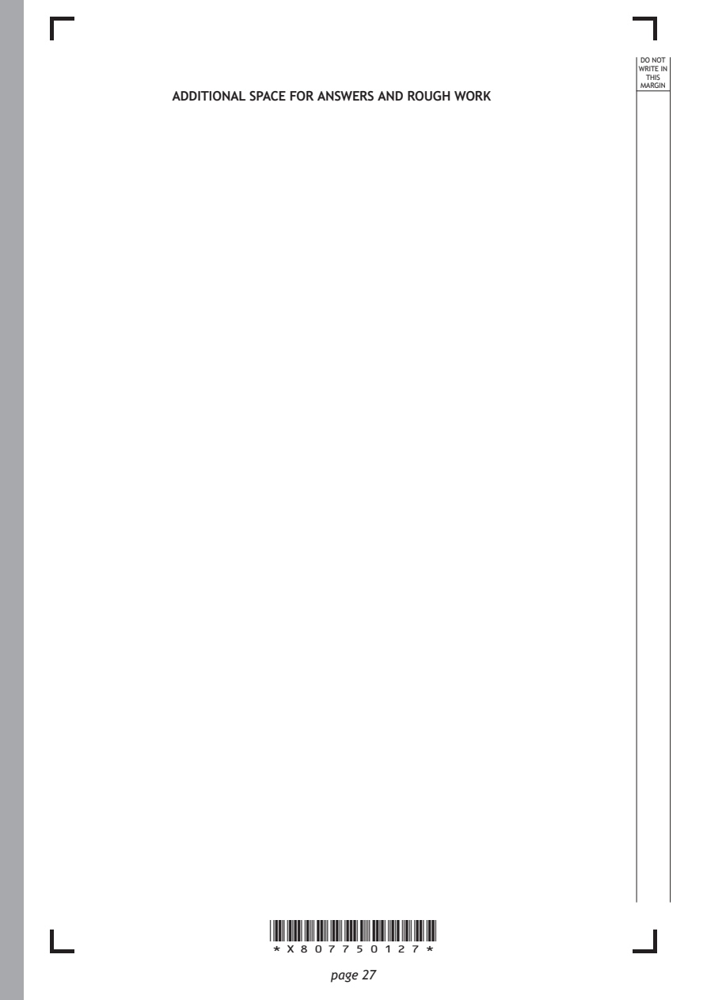
Selectable page text
DO NOT
WRITE IN
THIS
MARGIN
ADDITIONAL SPACE FOR ANSWERS AND ROUGH WORK
*X807750127*
page 27PDF page 28
Selectable page text
DO NOT
WRITE IN
THIS
MARGIN
ADDITIONAL SPACE FOR ANSWERS AND ROUGH WORK
Acknowledgement of copyright
Question 9 delikanlioguz/shutterstock.com
*X807750128*
page 28